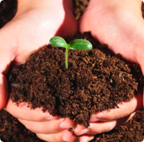
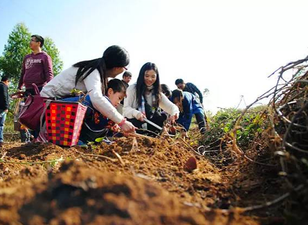

民以食为天，食以安为先。
北京食为先生态农业园有限责任公司，是一家以“有机”为核心，以“生态”为理念的新时代农业+物联网+互联网的产业公司，公司集果蔬种植及采摘、市民农园、共享农园、休闲度假、参观体验、社会参与为一体，打造了一个农产品互联网线上消费线下体验的实体企业，为市民提供安全健康食品，让人们吃的安心、吃的健康。
Let the food return to the taste of childhood
让食品回归小时候的味道
健康食材
G R A S S L A N D
我们坚持“6S”种植法则，农场里，我们人工拔出田间的杂草，将杂草和剪下多余的树枝，把它们粉碎发酵再还田；我们买回榨油后的饼渣喂地，饲养蚯蚓用来松土，用菜汁杀虫……于是，我们的田地越来越肥沃，我们的菜果越来越好吃，我们根本不需化肥农药，用汗水浇灌每一粒粮食和每一颗蔬菜，我们按时应季采摘。我们所做的每一份努力，都是为了生产出安全健康的好食材，让您吃进去的是愉悦，吃到的是幸福，吃出的是健康。

sdsd
健康的土壤
sdsd
健康的土壤健康的土壤健康的土壤健康的土壤
sdsd
健康的土壤
sdsd
健康的土壤健康的土壤健康的土壤健康的土壤
sdsd
健康的土壤
sdsd
健康的土壤健康的土壤健康的土壤健康的土壤
农场展示
5G智慧农场，集物联网、互联网与现代科学技术为一体，遵循自然，按时令种植和采收，从田间到餐桌，严格把控每一个环节，只为为您提供一份安心好食材。来这里可以验农耕文化，享受田园风光，共度亲情陪伴时光。现在种瓜，可以采菜，现在种菜，未来采瓜，以健康、快乐为终点，打造一个我为人人，人人为我的共享世界。
智慧云农场
智慧云农场
智慧云农场
智慧云农场

2019-09
在这里，传播科学种植技术，交流美食养生知识，探讨亲子科普、教育心得…………
>
种植技术
美食养生
亲子科普